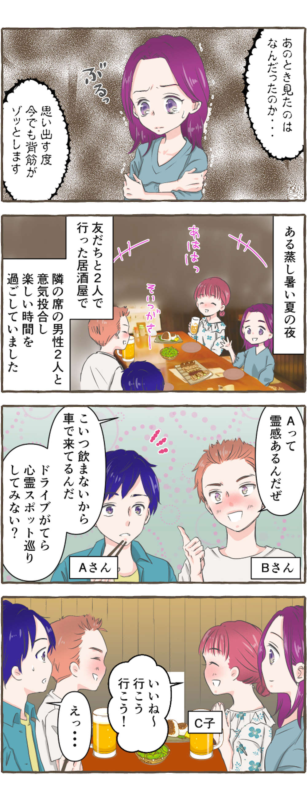
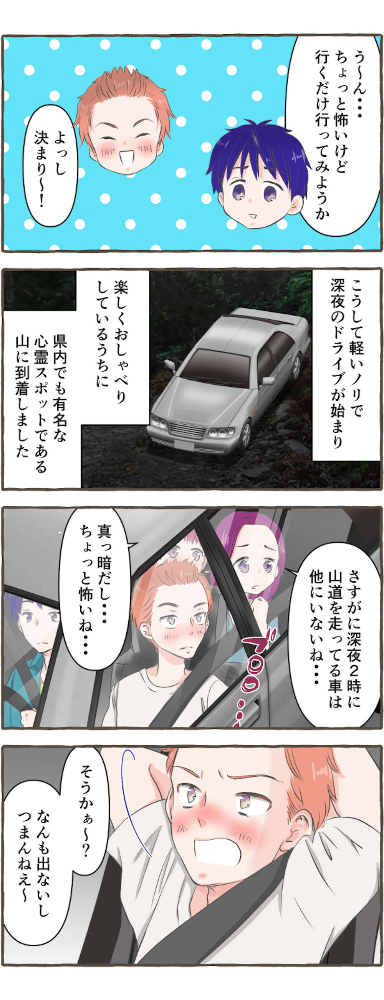

你是否经历过难以想象的奇怪现象？事实上，似乎有很多人遇到过灵异现象或者奇怪的现象。在这篇文章中，我们从大家提交的经历中精选了一些令人毛骨悚然、令人恐惧的“恐怖真实故事”。在这种情况下你会怎么做？
■凌晨2点，山路上突然出现一名男子。周围没有车...


- ※
- 参考健康法律、医疗制度、护理制度、金融制度等时，请务必事先确认公共机构的最新信息。
- ※
- 文章中使用的图像仅用于说明目的。
你是否经历过难以想象的奇怪现象？事实上，似乎有很多人遇到过灵异现象或者奇怪的现象。在这篇文章中，我们从大家提交的经历中精选了一些令人毛骨悚然、令人恐惧的“恐怖真实故事”。在这种情况下你会怎么做？

